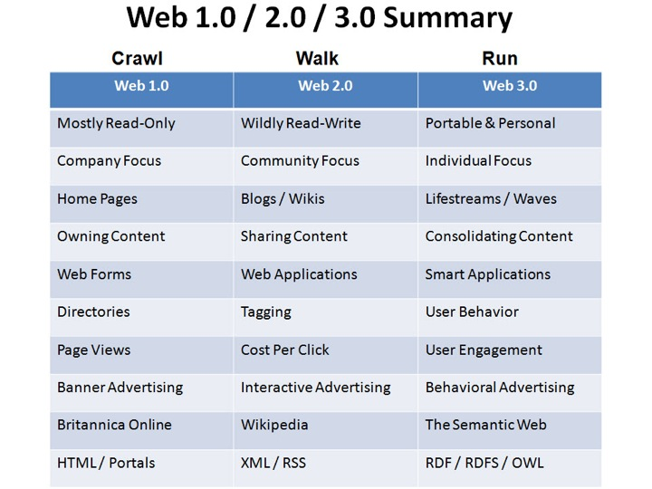

Yuli the husky was born around January 2016 and according to her fatality mess, it may be safe to say that she signed on ISIS papers just a few weeks after she born.
However, Yuli is too cute to be angry on and seems like she using it to keep dominate our house with terror.
Yuli is dreaming to get a guide dog vest so she could join us to university classes especially to the Web Programming Environment lessons.
האינטרנט מספק מידע שנכתב על ידי בעלי דפי האינטרנט.
האינטרנט מספק מידע שנכתב הן על ידי בעלי דפי האינטרנט והן מידע שניתן על ידי משתמשים אחרים ברשת האינטרנט.
דוגמה לדרכי העברת אינפורמציה בין משתמשים ברשת האינטרנט: פורומים, צ'אטים, פייסבוק, אינסטגרם וכו'.
ספקי התוכן הם גם המשתמשים עצמם.
האינטרנט מספק מידע על בסיס עיבוד וניתוח נתונים רבים שקשורים לרוב להרגלי השימוש של המשתמשים.
לדוגמה, דירוג תוצאות חיפוש עבור משתמש א' תושפע מאופן השימוש באינטרנט של משתמש ב', שנמצא מחזיק בהרגלי גלישה דומים לזה של משתמש א'.
כמו כן, בWeb3 ישנה אינטגרציה בין מספר מקורות מידע כמו Whatsapp, דפי אינטרנט, (Facebook (CheckIn וכו'.
יוצגו תופעות לוואי של תרופות שונות כאשר דירוג התוצאות יתבצע ללא קשר למשתמש שביצע את החיפוש.
כלומר, סביר להניח שהתוצאות וסדר הופעתן יהיה זהה ולא יושפע מ-"מי ביצע את השאילתא".
יוצגו תופעות לוואי של תרופות כאשר דירוג התוצאות עשוי להיות מושפע ממקרים כגון: משתמש ב' שנמצא בעל מאפייני אורח חיים (על בסיס הרגלי השימוש שלו ברשת האינטרנט) דומים לאלה של משתמש א'
חיפש גם כן את השאילתה ובחר להיכנס דווקא לתוצאה שדורגה רביעית, סביר להניח שתוצאה זו תדורג גבוה יותר בתוצאות שיוצגו למשתמש א'.
תוצאות הדירוג התבססו על חיפושים קודמים שקשורים לנושא ונעשו על ידי המשתמש, כמו למשל אם המשתמש חיפש "תסמינים לשפעת" ולאחר מכן חיפש "תופעות לוואי של תרופות",
ב-Web3 אנו עשויים לראות שהתוצאות הראשונות עבור השאילתה השנייה יהיו תופעות לוואי של תרופות שניתנות לטיפול בשפעת.
